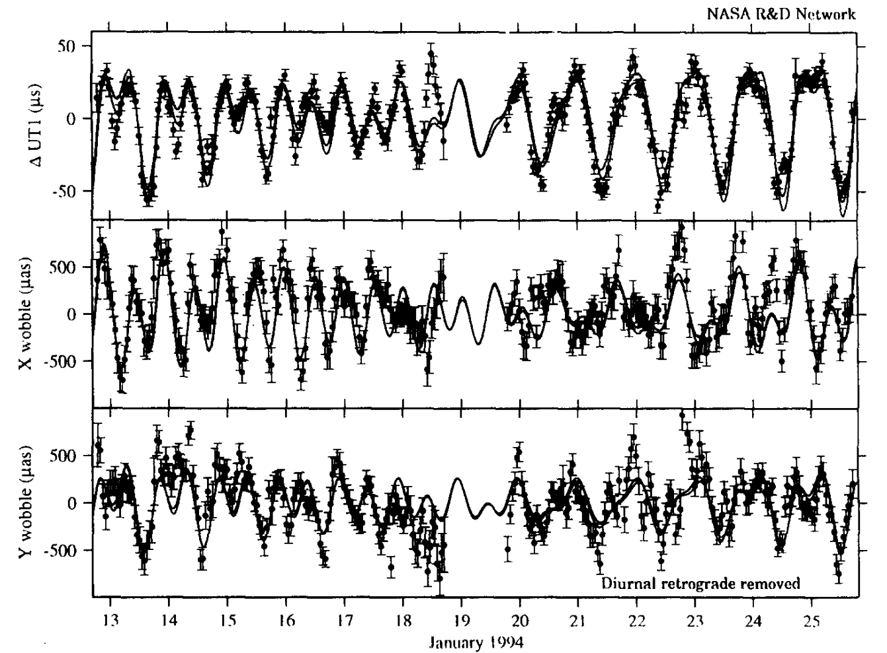

Oceanography
Introduction
Our Blue Marble

Heat
World Ocean Review
Heat

Eli Tziperman
Gases

IAEA
Life

Metals

Mining Weekly
Mass/Momentum
Chao and Ray, 1997
Studying Oceans

Observations, Theory, Computation
Ocean-Atmosphere

WHOI
Ocean-Solid Earth

NPS
Ocean-Land
- Fresh Water
- Weathered Rock
Not Just Earth!

NASA